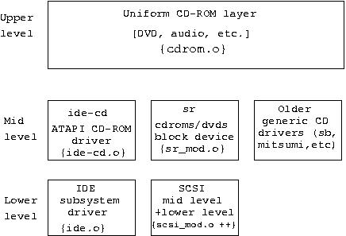

CDROM and DVD drives (and WORM devices) are accessible via the sr upper level device driver. While "sr" is the device driver name, "sr_mod" is its module name. The device file name is either /dev/sr<n> or /dev/scd<n>.
Following is a diagram illustrating the CDROM subsystem of which sr is a part:

The architecture of the CD-ROM subsystem.
This diagram glosses over some of the differences between the protocol stacks. CDROM device names are not maintained by the uniform CDROM layer but rather by each individual protocol stack. In the case of the SCSI subsystem, device names are maintained by the sr driver while the IDE subsystem maintains device names with its central "ide" driver (i.e. not by the ide-cd driver). USB and IEEE1394 cd devices names are maintained by their respective stacks. This may partially explain why the /dev/cdrom is often a symbolic link to the appropriate subsystem's device name.
Two types of SCSI devices are accessible via the sr driver:
CD-ROM devices (including DVD players) [SCSI peripheral device code is 5]
"Write-once read-multiple" devices which are known as WORMs. [SCSI peripheral device code is 4]
The sr driver is capable of recognizing 256 CDROM/DVD drives when it is loaded at kernel boot time or later as a module. However, once it is loaded, it will only recognize a fixed number of additional drives. The number of additional drives that can be accommodated is set by the kernel configuration parameter CONFIG_SR_EXTRA_DEVS whose default value is 2.
People often use the dd command to read a data CDROM containing an iso9660 file system. If a count argument is not given then the dd command will read the number of 2048 byte sectors indicated by the SCSI Read Capacity command. Unfortunately this can include unwritten (or "run out") sectors at the end of the image that can cause I/O errors. Use the isosize command (see its man page) to find the true length of the iso9660 image and use that in the "count=" argument given to the dd command.
Doing a test to find out if a cdrom drive supports XA mode (mode 2) triggers firmware bugs on some drives. Consequently the check for XA mode support is turned off by default. The following module parameter is provided:
xa_test=<0|1> |
All the following files are readable by all and produce ASCII output when read:
/proc/sys/dev/cdrom/autoclose /proc/sys/dev/cdrom/autoeject /proc/sys/dev/cdrom/check_media /proc/sys/dev/cdrom/debug /proc/sys/dev/cdrom/info /proc/sys/dev/cdrom/lock |
As an example, the auto eject feature can be turned on by the superuser with the command echo "1" > /proc/sys/dev/cdrom/autoeject. This will cause cdroms to be ejected from the drive when unmounted.
Many Linux users have no SCSI devices (or adapters) in their systems. They become a little perplexed as to why cd writer software (e.g. cdrecord and cdrdao) and cd music reading programs (e.g. cdparanoia) use the Linux SCSI subsystem. The answer is that these programs need lower level access to these devices. ATAPI (ATA Packet Interface) is essentially a SCSI command set sent over an ATA [1] transport. [The discussion in this section is also applicable to ATAPI tape drives and ATAPI floppy drives.]
Currently both cdrecord and cdparanoia interface to the SCSI generic driver (sg) and, in the case of ATAPI cd devices, use the ide-scsi pseudo device driver to access the hardware. This may change in the future as in the 2.4 series kernels a packet interface ioctl has been added to the uniform cdrom layer (see the diagram in Section 9.2 above). [2]
The default action of the IDE subsystem in Linux is to claim all ATA devices for its built-in drivers. In the case of an ATAPI cd writer, it will be claimed by the built-in ide-cd driver. Once this has happened, the SCSI subsystem is unable to get control over an ATAPI device. The ide-scsi (pseudo lower level SCSI) driver can only register ATAPI devices in the SCSI subsystem that have not already been claimed by the IDE subsystem.
Notice the built-in qualification in the previous paragraph. If both the ide-cd and ide-scsi drivers are modules then the first one loaded will claim the ATAPI cd devices (e.g. cd/dvd readers and writers). Furthermore you can switch the controlling driver module by rmmod-ing one and modprobe-ing the other.
Probably the most flexible way to instruct the IDE core driver that you want the cd writer at /dev/hdd accessible to cdrecord is to use the kernel boot option: "hdd=ide-scsi". This will cause the ide-cd driver to bypass /dev/hdd (irrespective of whether ide-cd driver is built-in or a module). As long as the ide-scsi driver is built-in or a module then it will "capture" the cd writer at /dev/hdd (with the IDE core driver loading the ide-scsi module if required).
The ide-cd driver module can be instructed to ignore certain ATA devices with the following syntax:
modprobe ide-cd ignore='hdc hdd' |
A new option added in the lk 2.4 series is of the form "hdd=scsi". This option seems to have a similar function to the "hdd=ide-scsi" option discussed above. Furthermore "hdd=scsi" can only be used if both the SCSI mid-level and the ide-scsi drivers are built into the kernel (otherwise "BAD OPTION" is reported by the ide_setup function).
To find out whether an ATAPI cd device is "owned" by the SCSI subsystem, the output of cat /proc/scsi/scsi can be checked. Another technique is to observe the "drive name:" line of cat /proc/sys/dev/cdrom/info for "sr" entries. The following output is from my system:
$ cat /proc/sys/dev/cdrom/info CD-ROM information, Id: cdrom.c 3.12 2000/10/18 drive name: sr1 sr0 drive speed: 16 0 drive # of slots: 1 1 Can close tray: 1 1 Can open tray: 1 1 Can lock tray: 1 1 Can change speed: 1 1 Can select disk: 0 0 Can read multisession: 1 1 Can read MCN: 1 1 Reports media changed: 1 1 Can play audio: 1 1 Can write CD-R: 1 0 Can write CD-RW: 1 0 Can read DVD: 0 1 Can write DVD-R: 0 0 Can write DVD-RAM: 0 0 |
Once an ATAPI cd writer at /dev/hdd has been registered by the SCSI subsystem, then cdroms should be mounted via the "scd" device name and cd players should also use the "scd" device. Strangely the hdparm command should still use the /dev/hdd device file (or the "echo ... > /proc/ide/hdd/settings" method described in this section). [3]
| [1] | ATA is the modern name for what was previously known as IDE and/or EIDE. Note that the subsystem that controls ATA devices in Linux is called the "IDE" subsystem for historical reasons. | |
| [2] | Other ATA devices such as tapes and floppies often use the ATAPI interface. However, the vast majority of ATA disks do not use the ATAPI interface. | |
| [3] | In the linux 2.4 kernel series there has been an increase in problems when the ide-scsi driver is used so that cdrecord can control ATAPI (IDE) cd writers. The problem may be related to the aggressive manner in which the IDE subsystem attempts to optimize the speed of data transfers on devices it controls. Some people experiencing timeouts and machine lockups have found that reducing the DMA setting via the hdparm command has fixed the problem. If the cd writer is connected to /dev/hdd then users have reported success with one of these two commands:
|